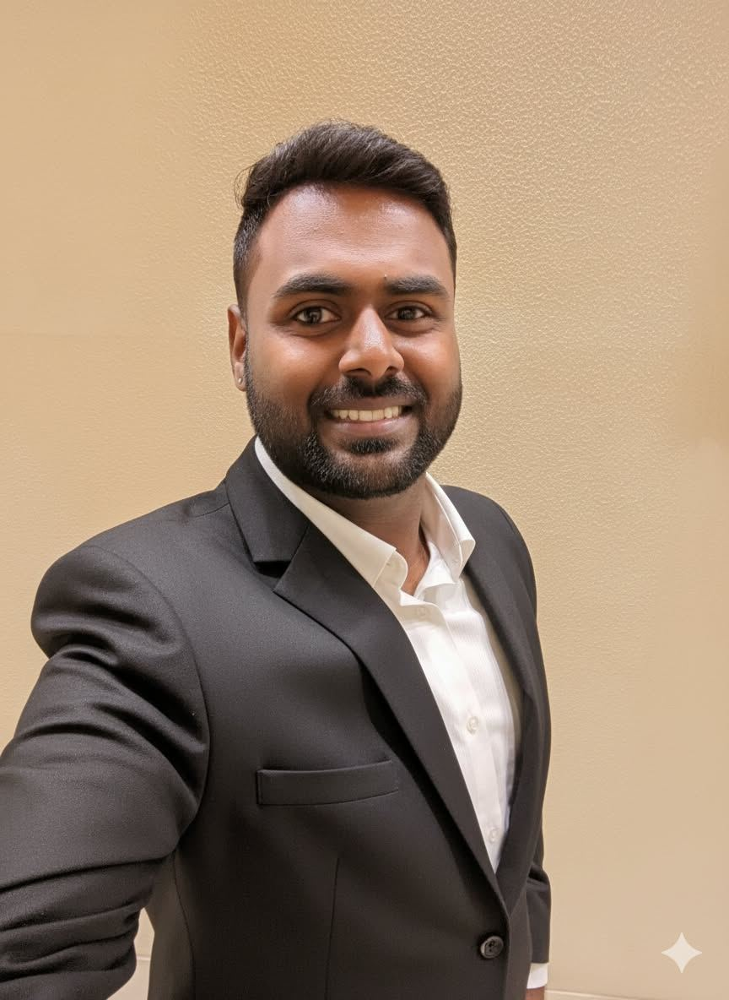

I build AI and digital products that change how institutions work.
I'm Vishnu. I lead AI and digital transformation across banking, consulting, startups and large enterprises, taking work from paper, field visits and gut calls to APIs, models and dashboards. I've done it inside a bank, at a deep tech startup, from a CEO's office and for 15+ banks and FIs.

PM · AI · DIGITAL
RISK BAND · A
One AI platform across the whole agri loan lifecycle.
I own SatSure's Agri Banking vertical end to end: strategy, discovery, roadmap and delivery. Each module answers a decision a lender makes. Pick a stage to see the problem, the product and who acts on it.
From the farm, to the credit desk, to the product.
An agriculture degree, an agribusiness MBA, two and a half years digitizing rural lending inside a bank, then almost three years building AI products for lenders. Filter by a skill to see where I used it.
Out in the field, on the stage.
I pitch, present and run workshops with banks, state governments and regulators. A few moments from the last year.
Climate hazard, priced into the portfolio.
I conceived the CVI: it converts climate hazard models into village and portfolio level risk scores a lender can act on. It took SatSure into empanelment with the Reserve Bank of India and won the NABARD Climate Resilience Agriculture Innovation Challenge. Reweight the hazards, click any village, see where the book is exposed.
Underwrite a farm from orbit.
A playable sketch of the thinking behind SatSource, the ML farm underwriting product I drive. It scores borrower land from satellite, weather and land record signals, so a lender can skip the field visit when the evidence is strong. Move the inputs and watch the credit memo rewrite itself.
Illustrative scoring for this portfolio. Weights are simplified and are not SatSource's production model.
One playbook, four arenas.
Manual to digital, across banking, consulting, startups and large institutions.
Tap a capability to see where it was used.
Four loops I run on every product.
Digital transformation fails at the handoffs: field to model, model to system, system to the people who use it. My process is built around those handoffs, whatever the industry.
Discover
Sit with credit officers, field teams and client leadership. Turn voice of customer and deployment findings into a ranked problem list.
Define
PRDs, user stories and acceptance criteria written as lender outcomes: hit rate, freshness, manual effort saved, client impact.
Deliver
Backlog prioritization and sprints with engineering and data science. Ship into the lender's own stack through APIs and LOS integrations.
Distribute
GTM, POCs, RFPs and regulatory paths. Adoption analytics go back into loop 1.
Transforming how your organization works? Let's talk.
I'm looking for roles leading AI and digital transformation, in product, strategy or consulting, across banking and fintech, consulting firms, startups and large conglomerates. I bring deep banking and agri domain knowledge, enterprise product ownership and a record of taking manual work digital at scale.